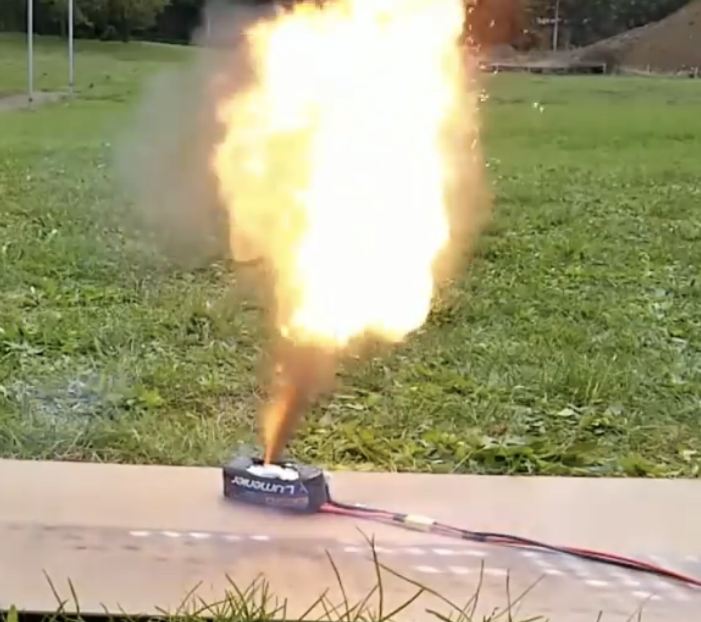
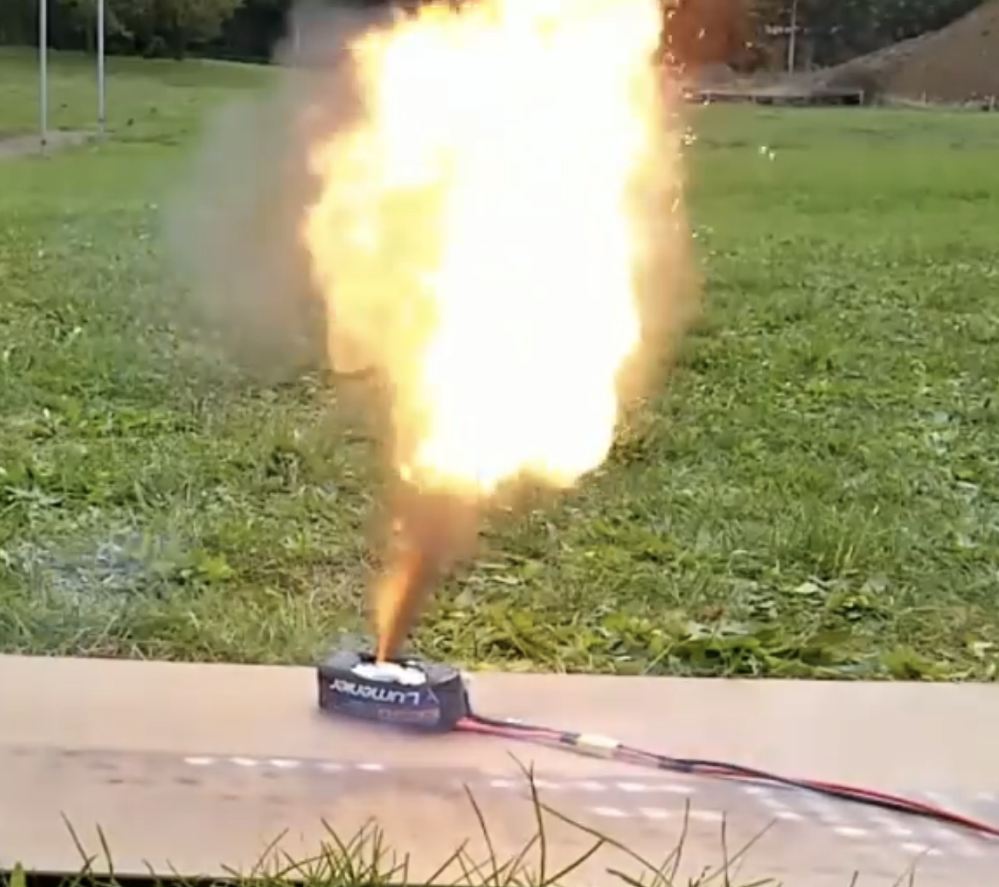

{kind=link}
{kind=link}
{kind=link}
{kind=link}
 

The assembled view is in Figure 2. As can be seen, the main chassis is made of TPS filament, while the roof, ramp, and spinner motor arm is PLA.
The entire thing was assembled with tape.
The wiring is observed in Figure 5. From a switch, 1 male XT30 connector was soldered for the battery; 1 female XT30 connector was soldered for the brushless weapon motor; and 1 female JST connector was soldered for the wheel motors.
The main chassis, as seen in Figure 3, underwent many iterations to get the 454 gram weight limit. As compared to other bots, ours is somewhat tall. The main principle behind this was that ours would avoid wheel attacks by elevating the chassis higher.
Also, our bot-type can be seen as a ramp/vertical-spinner hybrid.
Figure 6 represents a battery oddity we encountered. We accidentally exploded a Li-Po battery during a build session. While we did solder our wiring harness incorrectly, mutliple continuity tests proved to show no reason for the battery to short-circuit.
We believe that the battery was already old and on the verge of bulging, which resulted in smoke. Figure 6 is not a picture of our battery and is an extreme case of our case; we did not have a jet-stream of fire.
Overall, our bot went 2-1 in a single elimination tournament. With more time, we could have made better wheel mounts and better medium for a screw to go from the TPS body to the PLA roof of the bot.
{kind=link}